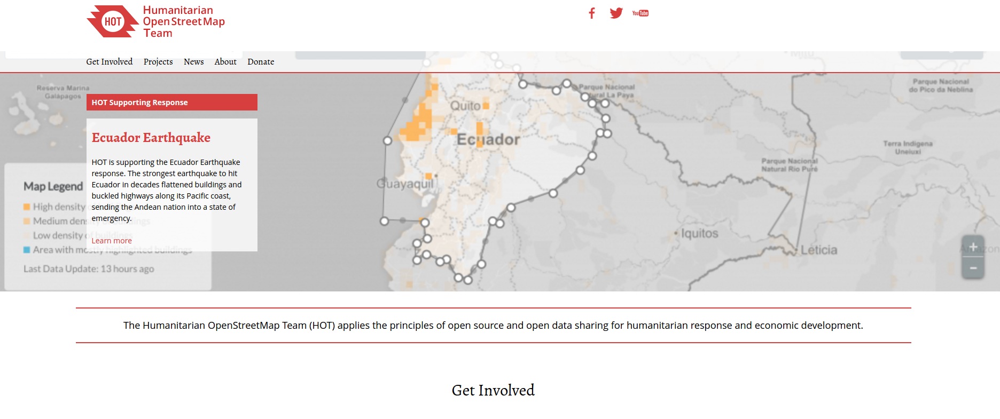
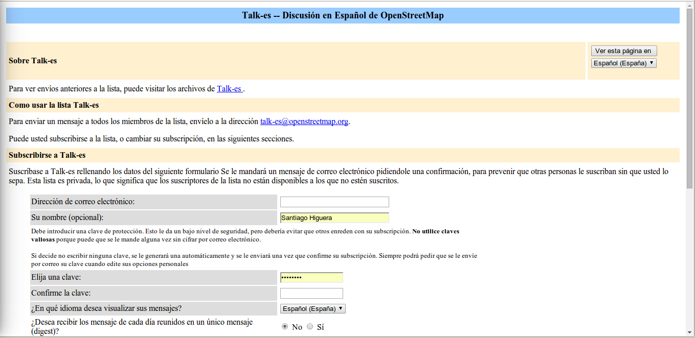

OpenStreetMap ES
Situación actual y proyectos de futuro
Santiago Higuera

- @santiagohiguera
- Profe en @caminosupm
- Mi empresa es Mercatorlab
- Participo en:
- Escribo en:
¿Qué es OpenStreetMap?
OpenStreetMap es una base de datos de información geográfica creada y mantenida de forma voluntaria y colaborativa por una creciente comunidad de entusiastas de los mapas.
Los datos contenidos en las bases de datos de OpenStreetMap son de acceso libre y gratuito.
¿Cómo se accede a OpenStreetMap?
A través del navegador web, en la dirección:
Historia
OpenStreetMap fue fundado por Steve Coast en 2004
 Image By © Raimond Spekking / CC BY-SA 4.0 (via Wikimedia Commons), CC BY-SA 4.0, Link
Image By © Raimond Spekking / CC BY-SA 4.0 (via Wikimedia Commons), CC BY-SA 4.0, Link
OSM 10th Year Anniversary
https://www.youtube.com/embed/7sC83j6vzjoOpenStreetMap Time Lapse of Electricity Grid Edits
https://www.youtube.com/watch?v=_TgQbmWOPHA/HOTOSM: Humanitariam OpenStreetMap Team
 https://hotosm.org/"Mapping support during the early phases of a response is critical, as responders and donors try to more clearly understand the situation on the ground"
(UN disaster coordination manager, Pakistan flood emergency 2010)
Each year, disasters around the world kill nearly 100,000 and affect or displace 200 million people.
Many of the places where these disasters occur are literally 'missing' from any map
First responders lack the information to make valuable decisions regarding relief efforts
¿Cómo se financia OpenStreetMap
El mantenimiento de servidores y redes de comunicación en base a donaciones voluntarias de particulares y empresas
http://donate.openstreetmap.org/Número de usuarios registrados

Usuarios activos última semana / mes

Nodos en la base de datos
Nodos modificados por día

¿Quién hace OpenStreetMap ahora?
http://osmlab.github.io/show-me-the-way/Datos agrupados por país
http://osmstats.neis-one.org/?item=countriesMiembros diarios activos en España
Nodos modificados por día en España
Usuarios en España
http://wiki.openstreetmap.org/wiki/Category:Users_in_SpainCataluña: Homogeneidad en el mapa: #1carrer1nom
- Homogeneización y calidad
- Niveles de revisión
- Fase 1: #1carrer1nom
- Coordinación: Wiki
- Herramienta de control de calidad

Zaragoza: accesibilidad
Burgos: calidad

Lista de correo en español de OpenStreetMap
https://lists.openstreetmap.org/listinfo/talk-es
WIKI Proyecto España
https://wiki.openstreetmap.org/wiki/ES:Wikiproyecto_España
Grupo de Telegram: OSM España

Riot
https://riot.im/app/#/room/#openstreetmap-es:matrix.orgDarse de alta como usuario registrado de OpenStreetMap
Para poder editar los mapas es necesario registrarse

Proyectos de futuro
- Reactivar asociación OSM España
- Importaciones
- Conversaciones con IGN
Seguir generando y compartiendo información cartográfica de calidad
THE END
BY Santiago Higuera

Esta obra está bajo una Licencia
Creative Commons Atribución-NoComercial-CompartirIgual
3.0 Unported.